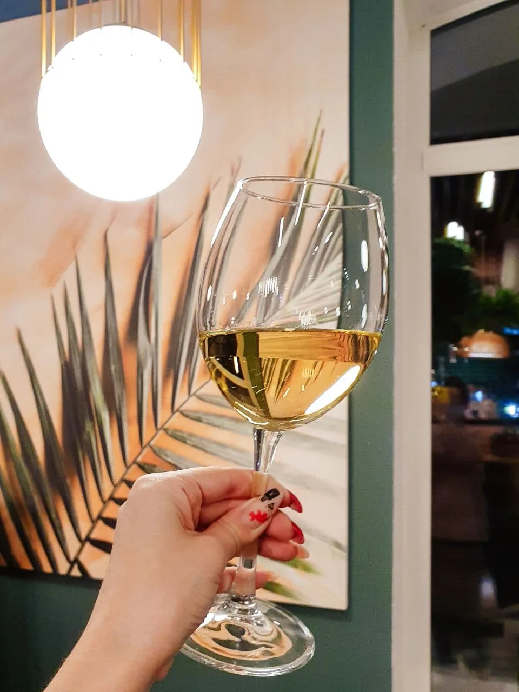
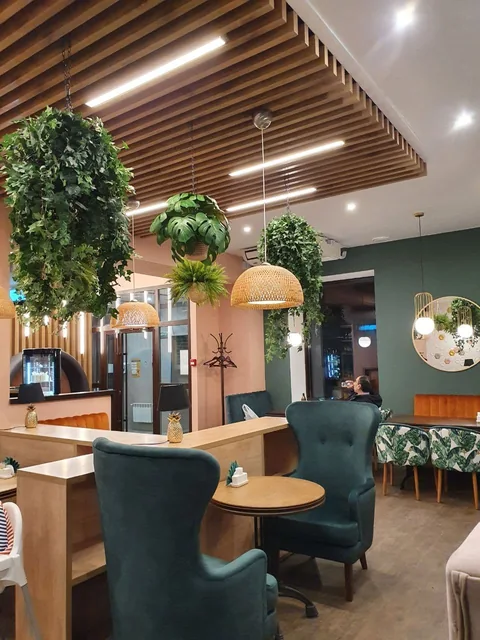
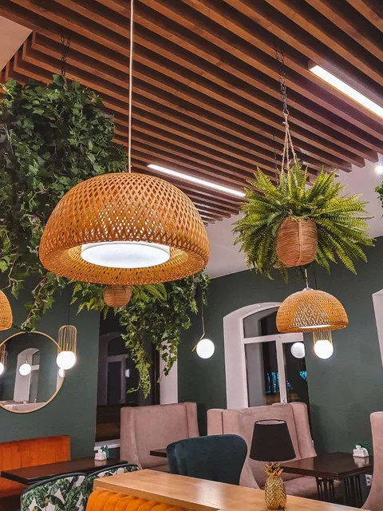
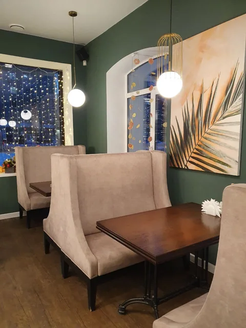

Вкусно быть
вместе.
Complimento — кафе в Северске.
На чашку кофе, любимое блюдо
и тёплый разговор.
Коммунистический просп., 111Каждый день с 11:00

Для встреч,
которым рады.
Европейская кухня, кофе, десерты и вино. Complimento — место для обеда с коллегами и вечера с близкими.
Зелёные растения, дерево и мягкий свет — простые детали, из которых складывается уют.
Уют
в деталях.
Немного зелени, мягкий свет.
И место для вашего разговора.



Слова гостей.
Короткие дословные фрагменты отзывов.
«… Сырный латте наконец-то действительно СЫРНЫЙ🤗 …»
«… Персонал приятный, только бы им подрасти в уровне сервиса и знаний обслуживания.»
«… Успокаивающая музыка, располагающая к общению. …»
Заглядывайте.
Вам здесь рады.
+7 (953) 929-21-28Время для встречи
- Понедельник — четверг
- 11:00–23:00
- Пятница — суббота
- 11:00–00:00
- Воскресенье
- 11:00–23:00